Greetings from the Director
1. The era of Volatility, Uncertainty, Complexity, and Ambiguity (VUCA)
Today is said to be the era of VUCA, meaning that it is characterized by Volatility, Uncertainty, Complexity, and Ambiguity. The same is true of the COVID-19 and climate change. When COVID-19 first emerged in China two years ago, we could not have imagined that it would have such a global impact. Global supply chains have made it possible for an event in one place on earth to have a significant influence on the entire world economy. There are many other possible risks to these unknowns, such as wars, natural disasters, pandemics, and cyber-attacks.
Above all, climate change poses the greatest threat to our generation. Major climate change events have already occurred and caused damage worldwide. In light of the Paris Agreement, however, countries, companies, researchers, and citizens around the world have not given up hope, and instead are taking up all the challenge of becoming carbon neutral by 2050. Today, it can be said that overcoming these global risks, ensuring the sustainability of society, and protecting the "environment", are major themes.
2. Concept of the Institute: Objectives and Actions
With an interdisciplinary perspective that transcends the framework of various disciplines, the Institute aims to contribute to the construction of a social system in which people, society, and nature can coexist. Based on the founding spirit of Tokai University, we will always maintain hope, have a broad perspective on human beings, society, nature, history, and the world, cultivate and disseminate wisdom, and work together to solve problems. This is what we are aiming for.
Action 1: One-stop dissemination of sustainability and environment research and education
First, we aim to contribute to society by bringing together our research in the fields of sustainability and environment at Tokai University. Through this process, we aim to contribute to society by deepening mutual cooperation, contributing to the further development of individual research, and actively disseminating information overseas. In addition, through the activities of this Institute, we will contribute to revitalizing learning for all students, from the perspective of being a global citizen.
Action 2: External dissemination of Japan's past experiences
Through research and educational activities, we will disseminate Japan's excellent environmental policies internationally. Japan has been working to solve many social issues, especially those that are environmental. In addition, it has been formulating and implementing various policies in collaboration with other countries. By disseminating these experiences, technologies and cultures, we aim to contribute to the world's efforts to solve environmental problems.
Action 3: Establishment of a platform for human resource exchange among various stakeholders
As an open research institute, we will build a human resources exchange platform for industry, academia and government. Through this platform, we will actively build networks with private companies, local governments, universities, and other research institutes. With the active participation of students, we will steadily pass these initiatives on to the next generation.
3. Call for broad participation
The Institute is an open platform for anyone who agrees with our objectives and is willing to contribute toward achieving them. The Institute also aims to enhance undergraduate and graduate education by supporting research activities in the field of sustainability and environment, disseminating information, and building human networks.
We look forward to the participation of a wide range of people, including students, who are involved in sustainability and environment-related research and education, both inside and outside of Tokai University.
Members
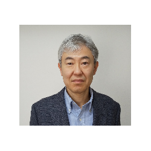
Satoshi Honma (climate policy)
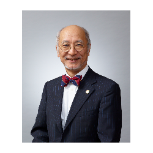
Eiji Hosoda (circular economy)
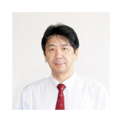
Hideki Kimura (solar energy)
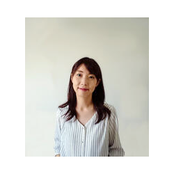
Mari Kosaka (sustainable development)
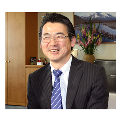
Hideka Morimoto (Director of the institute)
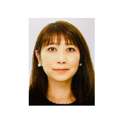
Haruko Morinaga (secretariat)
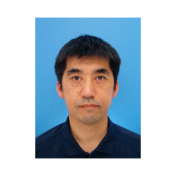
Koji Nakazawa (secretariat)
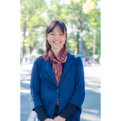
Sachi Ninomiya-Lim (environmental education)
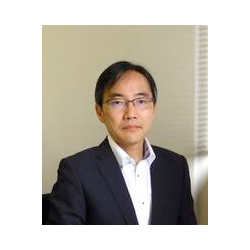
Kazu Okuma (Vice Director of the institute)
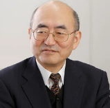
Osami Sagisaka (Visiting Researcher)
Troy Sternberg (Visiting Researcher)
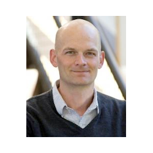
David D. Sussman (natural resource conflicts)
Farhad Taghizadeh-Hesary (energy policy)
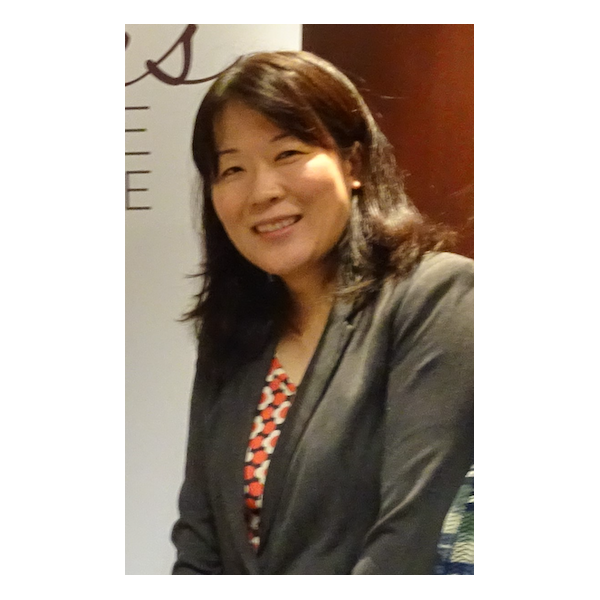
Yuki Tsuji (gender and politics)
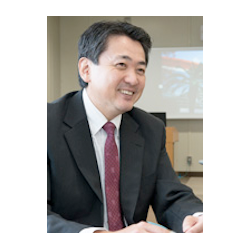
Haruhisa Uchida (energy technology)
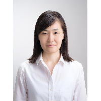
Ayako Wakano (development economics)
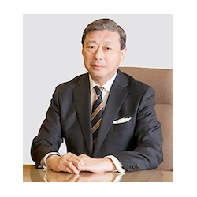
Kiyoshi Yamada (law)
Masashi Yamamoto (recycling policy)
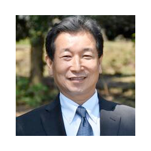
Naoto Yoshikawa (sustainable society)